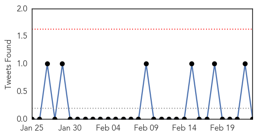
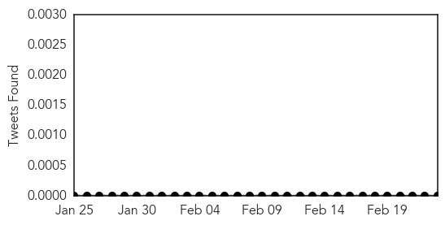

Influenza
30-Day Web Trend
30-Day Twitter Trend
0 alerts, 0 warnings

Article Locations

Article Confidences

Top Articles:
- 0.990
- DOH: Filipino from China who showed bird flu symptoms dies
- 0.981
- ‘Bird flu, not Merscov, killed Pinoy in China’
- 0.939
- Humanitarian efforts increase as crisis in Ukraine continues
- 0.926
- Flu jabs to arrive later than usual
- 0.866
- Only About Children childcare centre worker develops tuberculosis
- 0.751
- February 23, 2015 Archives
- 0.751
- February 22, 2015 Archives
- 0.526
- No Bird Flu in Obasanjo’s Farms – Minister
Top Tweets:
-
No tweets found for Feb 23, 2015
Swine Flu
30-Day Web Trend
10 alerts, 8 warnings

30-Day Twitter Trend
0 alerts, 0 warnings

Article Locations

Article Confidences

Top Articles:
- 1.000
- Swine flu in India: 38 positive cases; death toll in C'garh rises to four
- 1.000
- Doctors in Haryana accuse health department of discouraging laboratory tests for swine flu
- 1.000
- H1N1 Treatment Burns Hole in Patients' Pocket, Exposes Chinks in Medical Sector
- 1.000
- Swine flu cases cross 14,000, 832 deaths reported
- 1.000
- Swine Flu Spreading in India: Symptoms, Causes, Diagnosis, Treatment
- 1.000
- 84 new samples test positive for swine flu virus in Delhi
- 1.000
- Swine Flu toll rises to 14,000 and 832 deaths across India
- 1.000
- Swine flu in India: 832 deaths reported, cases cross 14,000
- 0.999
- Private doctors in Haryana flay govt. for downplaying swine flu cases
- 0.999
- 98 fresh cases in 3 days, H1N1 count up to 228
- 0.999
- Swine flu effects in India and myths about swine flu
- 0.999
- Rapid rise in swine flu deaths and cases in India
- 0.999
- Hospitals with over 50 beds can treat swine flu: Delhi health department
- 0.996
- Don't panic, sufficient medicines and fully equipped to deal with swine flu: UP govt
- 0.995
- Gujarat Junior Health Minister Tests 'Positive' for Swine Flu
- 0.995
- Fully Equipped to Deal With Swine Flu
- 0.995
- ‘Book Health Officials For Criminal Negligence’
- 0.995
- Swine flu claims 12 more lives in Gujarat; toll reaches 219
- 0.994
- Passengers screened for swine flu at Mizoram's airport, permitted from the Aviation department
- 0.994
- Swine Flu Spreads in Tamil Nadu, 8 Deaths, 225 Affected
- 0.994
- Swine Flu Claims 38 More Lives in India, Total Death Toll Crosses 800
- 0.993
- Swine flu: Toll rises to 219 as 12 more succumb in Gujarat
- 0.993
- Despite HC order, pvt hospitals yet to increase wards
- 0.993
- Latest News & In-depth Coverage on Kashmir Conflict
- 0.992
- As Swine flu cases rise, people turn to BMC’s helpline
- 0.992
- No swine flu death reported in Maharashtra today
- 0.991
- After vaccines, homeopathic medicines, IPS officer trainees test positive for H1N1
- 0.991
- 7 die of swine flu in Maha taking death toll to 99
- 0.984
- 3rd swine flu case in Nagaland
- 0.981
- H1N1 cases surge past 3,000-mark in Gujarat
- 0.980
- Flu steps after babu death
- 0.973
- H1N1 lab at SSGH hits a roadblock
- 0.972
- Guj junior health minister tests positive for swine flu – THE SEN TIMES
- 0.970
- Thane well-stocked with Swine flu medicines, well-prepared to tackle the disease
- 0.966
- Two more deaths take swine flu toll to five in Lucknow
- 0.964
- Swine flu toll rises to six in Kashmir
- 0.963
- 17 new patients of swine flu in Lucknow, 297 cases in UP
- 0.963
- Separate OPD for H1N1 at hospitals
- 0.962
- Swine flu hits UP legislator, Lucknow reports 228 cases
- 0.962
- Swine flu hits UP legislator, Lucknow reports 228 cases
- 0.954
- Bengal CM calls for joint effort to fight swine flu in state
- 0.953
- Swine flu toll rises to six in Kashmir
- 0.949
- Mamata calls for joint efforts to fight swine flu
- 0.943
- Gurgaon man sold swine flu ‘vaccine’
- 0.938
- Swine flu scare: Sale of masks shoots up in the city
- 0.935
- H1N1 Test Rate Fixed at Rs 3,750
- 0.926
- Passengers to be screened for swine flu at Mizoram's airport
- 0.922
- Gujarat junior health minister tests positive for swine flu
- 0.902
- 12 More Swine Flu Deaths in Gujarat, Government Under Fire Over Lack of Doctors
- 0.858
- In Gujarat, Junior Health Minister Tests Positive for Swine Flu
Showing top 50 articles...
Top Tweets:
-
No tweets found for Feb 23, 2015